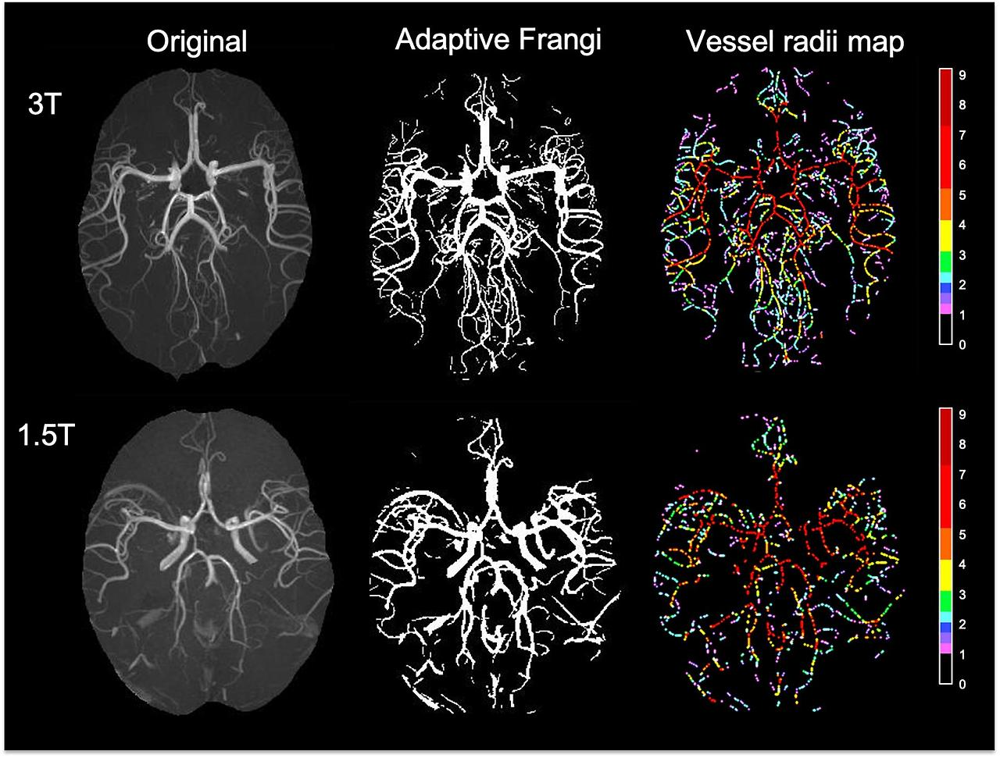
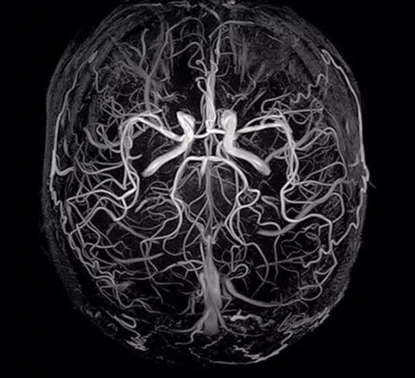
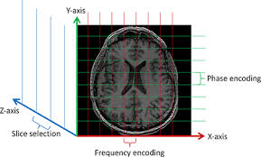
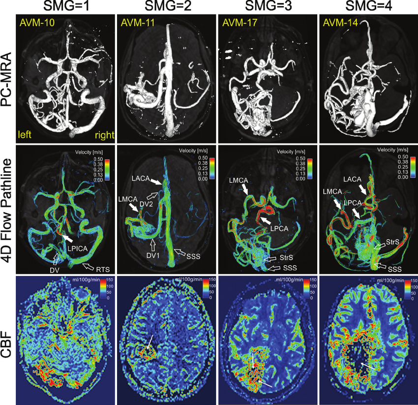
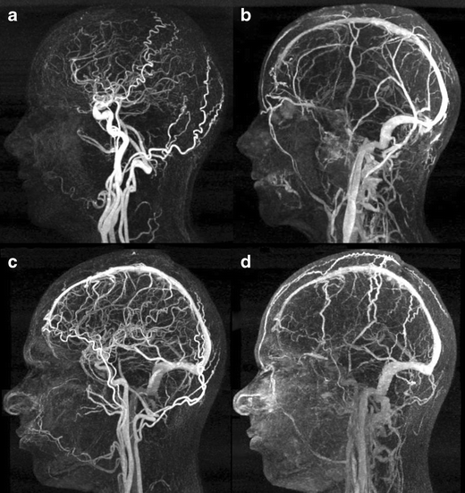

---
{
"layout": "note",
"title": "[Cardiovascular disease] Aneurysm _ part2_MRA",
"journal": true,
"section": "Study",
"topic": "CardioVascular Diseases",
"excerpt": "[Cardiovascular disease] Aneurysm _ part2_MRA 이전 시간에는 MRI 의 기본 원리에 대해서 알아보았고, 이제 MRA Magnetic Resonance Angiography 방사선을 사용하지 않고 ,",
"classes": "wide",
"permalink": "/blog/biomechanics/cardiovascular-diseases/cardiovascular-disease-aneurysm-part2-mra/",
"study_area": "Mechanical",
"date": "2024-09-24",
"source_url": "https://jeffdissel.tistory.com/m/94",
"header": {
"teaser": "/blog/biomechanics/cardiovascular-diseases/cardiovascular-disease-aneurysm-part2-mra/images/img-001.jpg"
}
}
---
{% raw %}[Cardiovascular disease] Aneurysm _ part2_MRA
이전 시간에는
MRI 의 기본 원리에 대해서 알아보았고,
이제
MRA
Magnetic Resonance Angiography
방사선을 사용하지 않고
,
조영제(Contrast agent)
없이도
혈관
을 시각화할 수 있는 안전하고 효과적인 방식
에 대해서 알아보자.

MRA
1. TOF MRA :
MRI와 비교해서 과정을 살펴보자.
[이전포스터 꼭 참고]
1. 강한 자기장
을 사용하여 수소 원자핵들을 종축(자기장 방향)으로 정렬, (
MRI
와 동일)
2. 90도 RF 펄스
를 쐬어, 수소 원자핵들을 횡축으로 회전
여기서, 고정된 조직은
RF 펄스
를 계속 받기 때문에
포화 상태
에 도달한다.
이전 포스터에서
스핀에코
에 대해서 마지막에 언급했었다.
RF펄스를 받아서 동기화 상태가 되지만, 시간이 흐르면,
주변 자기장의 불안정화 + 주변 조직과의 상호작용으로
점점 비동기화 상태가 된다.
결국, 포화상태 = 점점 비동기화 상태 = 신호가 약해짐.
3. 혈액은 계속 움직이기 때문에
계속해서, RF펄스에 영향을 받아 동기화 되어, 강한 신호
를 발생시킨다.
혈액은 이동하면서 계속 새롭게 RF 펄스의 영향을 받기 때문에
,
이 신호가
강하게
나타난다.
4. 최종적으로, 고정된 조직
은 포화상태가 되어 신호가 약해져
어둡게
나타나고,
혈액
은 계속 움직여
강한 신호
를 발생시켜
밝게
나타남.
요약: 고정된 조직은 포화상태-비동기화상태가 되면서, 신호가 약해지고,(어둡게)
계속 움직이는 혈액은 끊임없이 동기화 상태가 되어 신호가 강하다.(밝게)

2. PC MRA :
혈류의 속도
와
방향
에 따른
위상 차이
를 이용해
혈관
을 강조.
1. 강한 자기장
을 사용하여 수소 원자핵들을 종축(자기장 방향)으로 정렬, (
MRI
와 동일)
2. 90도 RF 펄스
를 쐬어, 수소 원자핵들을 횡축으로 회전
3. 여기서 핵심은
Gradient Magnetic Field
를 이용하는 것이다.
이전 포스터에서 MRI의 핵심을 설명할때,
자기장의 세기를 단면마다 다르게 설정하여,
신호 리시버가, 받은 정보가 어디 단면에서 온건지
알수 있도록 디자인 하여 3D형상을 만들 수 있었다.

gradient axis(위 사진에서 z축)
을 기준으로 고정된 조직의 위상은 시간의 흐름에 따라 동일 할 것이다.
하지만, 혈액은 움직이므로,
자기장의 세기가 다른 단면들을
지나갈 것이다.
이것을 위상이 변한다라고 말한다.
따라서,
위상이 변하는 신호를 혈액이라고 인식하면
고정된 조직과 혈액을 구분 할 수 있다.
4. 위상이 변하는 신호를 혈액으로 인지하고 밝게 처리.

pc MRA의 가장 큰 장점은,
혈관의 위치 뿐만아니라,
혈류의 속도도 알 수 있다는 것이다.
3. CE-MRA :
조영제
를 사용하여 혈관을
선명하게 시각화
하는 방식으로,
혈관의 구조
를 명확히 확인할 수 있습니다.
조영제로는 가돌리늄을 사용.

{% endraw %}